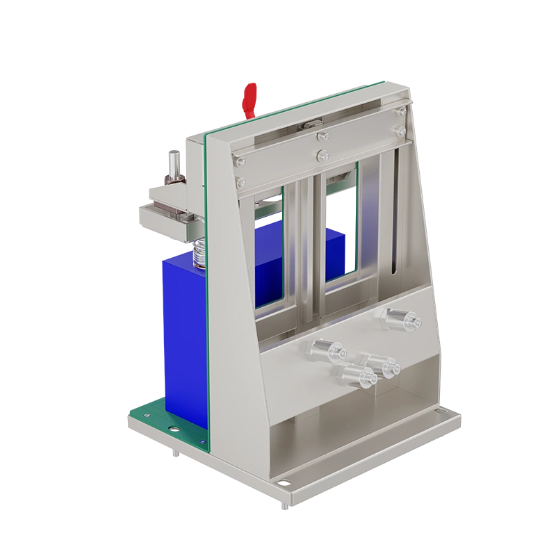

Fixtures & auxiliary · Auxiliary serie
CA-4008N-1U-T
Adds eight temperature or auxiliary voltage channels to a 1U slot, logged in the same time base as the main channels.

Utillaje y canales auxiliares: hasta 600 A, presión y temperatura.
| Objeto de ensayo | Temperature / voltage auxiliary channels |
|---|---|
| Voltaje | 0–5 V aux |
| Corriente | — |
| Rangos | — |
| Canales | 8 aux per unit |
| Precisión | ±0.1 °C (NTC) |
| Respuesta de corriente | — |
| Registro | 1 Hz |
| Recuperación | — |
La especificación completa, los certificados de calibración y las opciones de configuración se entregan con la oferta.
Entrega habitual 4–8 semanas
Instrumentos relacionados